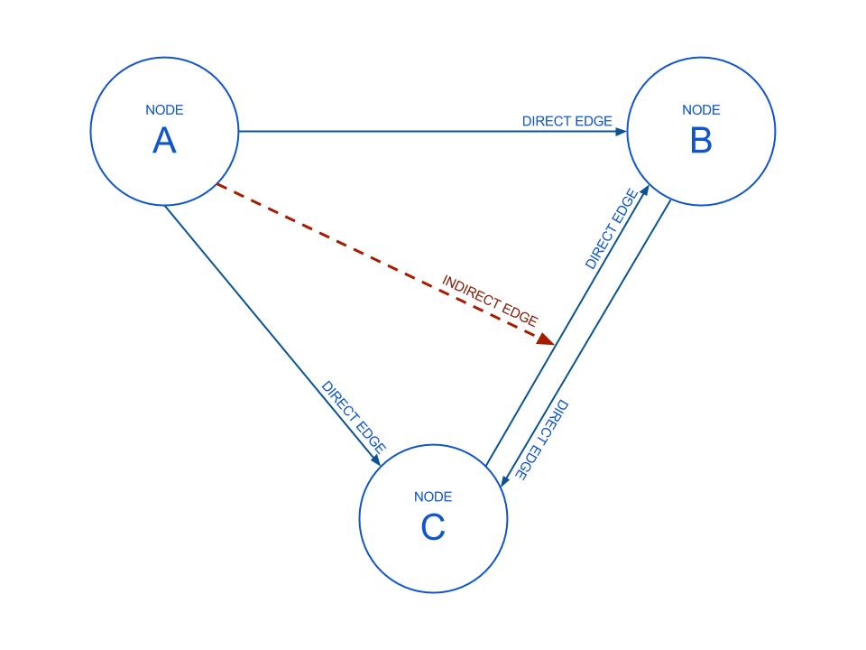

What is this?
The RelationshipGraph is an Artificial Intelligence model for use in games that makes use of an extended graph model to allow for complex relationships to emerge.
An Extended Graph Model? Did you make that up?
Yes, I did. At the core of the RelationshipGraph is a standard graph model, it has Nodes and Edges and all that jazz. And while this is useful for a basic model of relationships (Alice is related to Bob), it doesn't allow for more complex relationships and knowledge. So the standard graph was extended like so:

So a Node can track an Edge between two other Node's. I call this an Indirect Edge, as neither Node in the Edge refers to the owner of the Edge. This simply means that Charles "knows" that Alice is related to Bob. This simple addition can be manipulated for some advanced behaviour that you can see in some of the demos.
So what can I do with this?
You can have characters in your game that are aware of the relationships between others and makes their decisions based on that. For example, at a market if a seller knows your character regularly buys from a competitor, they might offer steeper discounts. Or you could "lie" to characters and provide them with false relationships about other characters. Or you could just use the graph to determine standard relationships among your game characters i.e. These are enemies of this other character.
That's it?
There's some additional functionality to allow messaging through the graph, relationships to groups and to track previous relationships (similar to memory). But those aren't the main focus of the RelationshipGraph.
Got any demos?
Sure! Here's a couple:
Who's bright idea was this?
It's all Brendan O'Connor's (@pandaboy) fault. You can ask him why he thinks this is a good idea. This was his dissertation project at Trinity College Dublin, and he has unwisely chosen to expand it some more.
Need Assistance?
Having trouble with RelationshipGraph? Check out the wiki or contact me on twitter and I’ll do my best to help you sort it out.